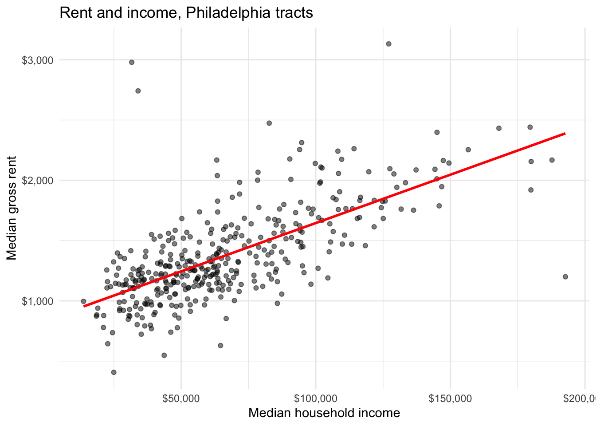
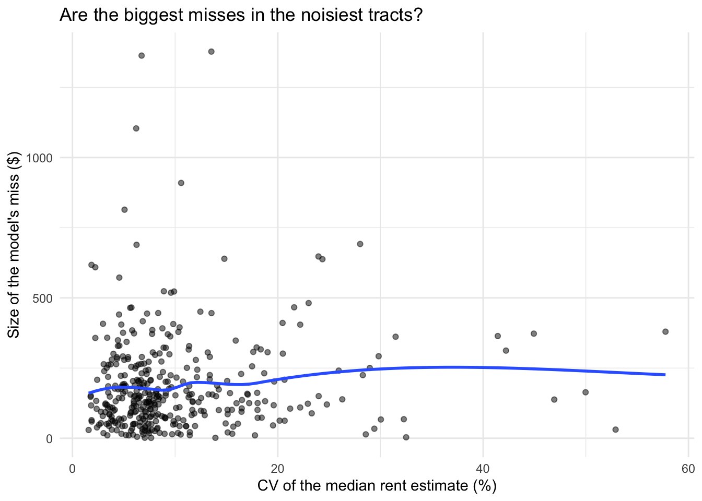
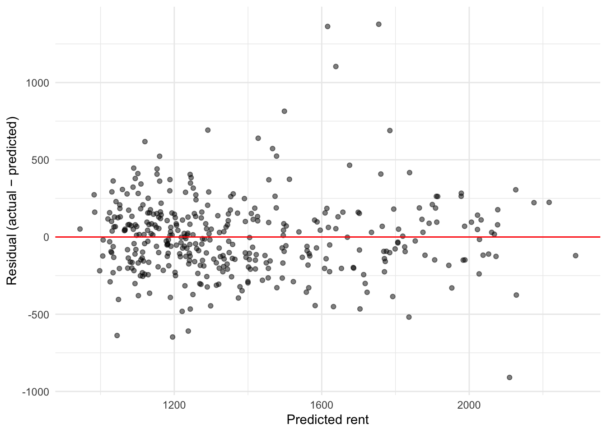
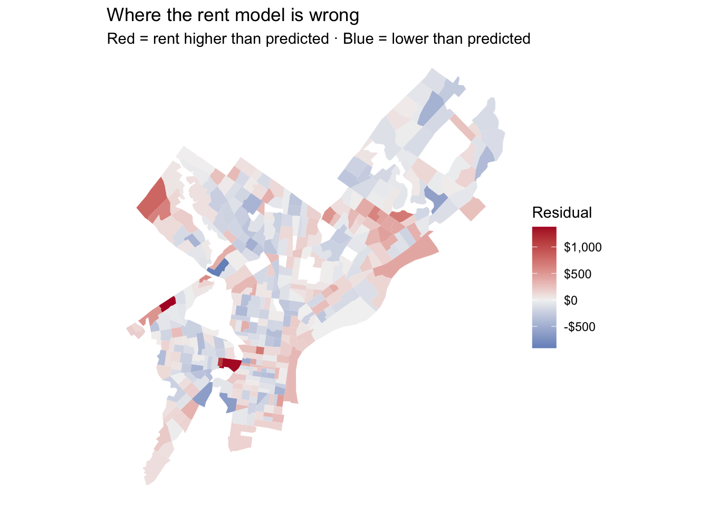
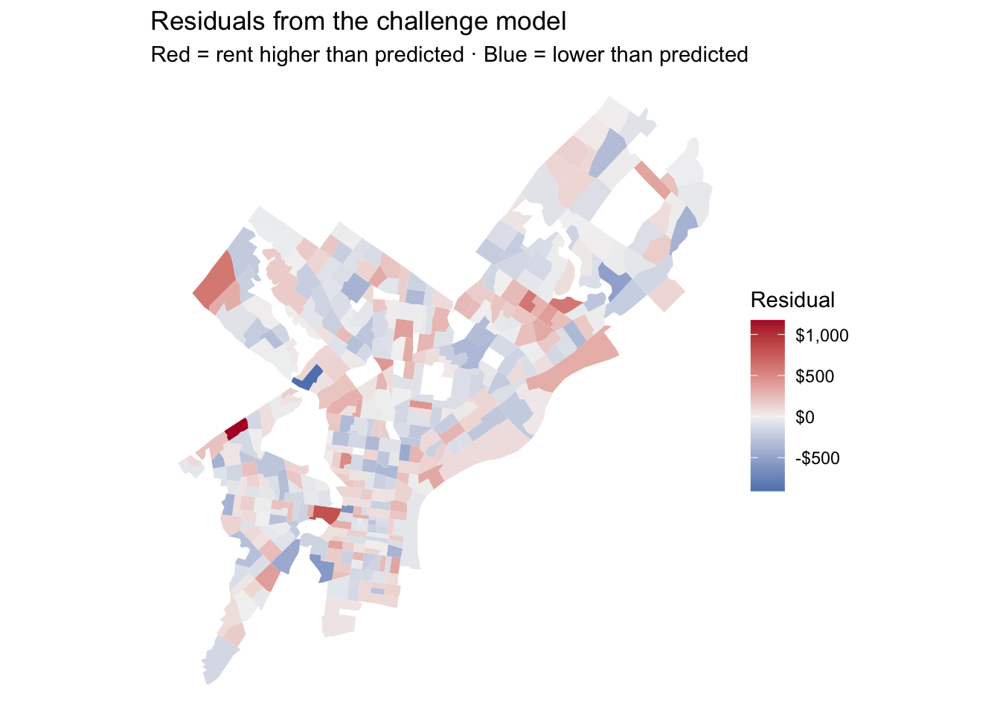

library(tidyverse)
library(tidycensus)
library(sf)
library(caret) # cross-validation
library(lmtest) # Breusch-Pagan test
# Your key lives in .Renviron. Never paste it here.
Sys.getenv("CENSUS_API_KEY") != "" # should print TRUE[1] TRUEMUSA 5080 · Linear Regression for Prediction
The first part of the lab (Parts 0–7) is guided and builds your toolkit. Type the code yourself; don’t copy and paste. Fill in each blank. The last part is the challenge: your team builds the best rent prediction model it can and defends it. At the end, the presenter from each team is chosen at random, so everyone needs to understand every step.
The question: A housing agency wants an expected rent for every Philadelphia tract, so it can flag tracts where rents run well above what we’d expect given who lives there.
Is that a β̂ problem or a ŷ problem? Write your answer here before you start: This is a ŷ problem. The agency wants accurate tract-level predictions and prediction errors, not a causal estimate of one coefficient.
[1] TRUEThis is last week’s pull with a few more variables. Every line should look familiar.
philly_tracts <- get_acs(
geography = "tract",
state = "PA",
county = "Philadelphia",
variables = c(
med_rent = "B25064_001", # median gross rent (our Y)
med_inc = "B19013_001", # median household income
total_pop = "B01003_001",
occ_units = "B25003_001", # occupied housing units
renter_occ = "B25003_003", # renter-occupied units
edu_total = "B15003_001", # population 25+
ba = "B15003_022",
ma = "B15003_023",
prof = "B15003_024",
phd = "B15003_025"
),
year = 2023,
output = "wide",
geometry = TRUE
) %>%
st_transform(2272) # Pennsylvania South State Plane, feet
|
| | 0%
|
|= | 1%
|
|= | 2%
|
|== | 3%
|
|=== | 4%
|
|=== | 5%
|
|==== | 6%
|
|===== | 7%
|
|====== | 8%
|
|====== | 9%
|
|======= | 10%
|
|======== | 11%
|
|======== | 12%
|
|========= | 13%
|
|========== | 14%
|
|========== | 15%
|
|=========== | 16%
|
|============ | 17%
|
|============ | 18%
|
|============= | 19%
|
|============== | 20%
|
|=============== | 21%
|
|=============== | 22%
|
|================ | 23%
|
|================= | 25%
|
|================== | 26%
|
|=================== | 27%
|
|=================== | 28%
|
|==================== | 29%
|
|===================== | 30%
|
|===================== | 31%
|
|====================== | 32%
|
|======================= | 33%
|
|======================= | 34%
|
|======================== | 35%
|
|========================= | 36%
|
|========================== | 37%
|
|=========================== | 38%
|
|============================ | 39%
|
|============================ | 40%
|
|============================= | 41%
|
|============================== | 42%
|
|============================== | 43%
|
|=============================== | 44%
|
|================================ | 45%
|
|================================ | 46%
|
|================================= | 47%
|
|================================== | 48%
|
|=================================== | 49%
|
|=================================== | 50%
|
|==================================== | 51%
|
|===================================== | 52%
|
|===================================== | 53%
|
|====================================== | 54%
|
|======================================= | 55%
|
|======================================= | 56%
|
|======================================== | 57%
|
|========================================= | 58%
|
|========================================= | 59%
|
|========================================== | 60%
|
|=========================================== | 61%
|
|=========================================== | 62%
|
|============================================= | 64%
|
|============================================= | 65%
|
|============================================== | 66%
|
|=============================================== | 67%
|
|================================================ | 68%
|
|================================================ | 69%
|
|================================================= | 70%
|
|================================================== | 71%
|
|================================================== | 72%
|
|=================================================== | 73%
|
|==================================================== | 74%
|
|==================================================== | 75%
|
|===================================================== | 76%
|
|====================================================== | 77%
|
|====================================================== | 78%
|
|======================================================= | 79%
|
|======================================================== | 80%
|
|======================================================== | 81%
|
|========================================================= | 82%
|
|========================================================== | 83%
|
|========================================================== | 84%
|
|=========================================================== | 85%
|
|============================================================ | 86%
|
|============================================================= | 87%
|
|============================================================== | 88%
|
|============================================================== | 89%
|
|=============================================================== | 90%
|
|================================================================ | 91%
|
|================================================================= | 92%
|
|================================================================= | 93%
|
|================================================================== | 94%
|
|=================================================================== | 95%
|
|=================================================================== | 96%
|
|==================================================================== | 97%
|
|===================================================================== | 98%
|
|===================================================================== | 99%
|
|======================================================================| 100%Now build the variables. A data frame goes in, a data frame comes out.
Bring back the stations and count how many sit within half a mile of each tract. This is Week 4 with one new function.
Stop and look: st_is_within_distance() returns a list, one element per tract, holding the stations within range. What does lengths() do to that list?
lengths() counts the number of entries in each list element, turning the list of nearby-station IDs into one station count per tract.
A regression can’t use a row with a missing Y or X. R will quietly drop those rows, and later your residuals won’t line up with your tracts. So drop them yourself, on purpose, and count.
[1] 408[1] 377Rule from Week 4, again: how many tracts did you lose? Which kind of tract has no median rent? (Hint: think about who lives there.)
The filter keeps 377 of 408 tracts, so it removes 31. Tracts with no median rent tend to have no conventional renter households—for example, tracts dominated by industrial land, parks, airports, prisons, dormitories, or other group quarters—so the ACS cannot estimate a household median rent there.
The Week 3 habit comes first: plot the relationship before you fit anything.
ggplot(tracts, aes(x = med_incE, y = med_rentE)) +
geom_point(alpha = 0.5) +
geom_smooth(method = "lm", se = FALSE, color = "red") +
scale_x_continuous(labels = scales::dollar) +
scale_y_continuous(labels = scales::dollar) +
labs(x = "Median household income", y = "Median gross rent",
title = "Rent and income, Philadelphia tracts") +
theme_minimal()
Stop and look: Does a straight line describe this cloud well everywhere, or does it bend? Where are the points that sit far from the line?
The relationship is strongly positive but not perfectly linear: it starts to flatten among the highest-income tracts. A few low- and middle-income tracts have rents far above the line, and one very high-income tract has rent far below it.
Call:
lm(formula = med_rentE ~ med_incE, data = tracts)
Residuals:
Min 1Q Median 3Q Max
-1189.35 -163.92 -17.77 133.39 1881.94
Coefficients:
Estimate Std. Error t value Pr(>|t|)
(Intercept) 8.433e+02 3.347e+01 25.19 <2e-16 ***
med_incE 8.022e-03 4.491e-04 17.86 <2e-16 ***
---
Signif. codes: 0 '***' 0.001 '**' 0.01 '*' 0.05 '.' 0.1 ' ' 1
Residual standard error: 287.8 on 375 degrees of freedom
Multiple R-squared: 0.4597, Adjusted R-squared: 0.4583
F-statistic: 319.1 on 1 and 375 DF, p-value: < 2.2e-16Units first. Translate the income coefficient into something a person would notice:
“A tract with $10,000 more in median income has a predicted rent about $80.22 higher per month.”
Stop and look: The tiny p-value says the slope is distinguishable from zero under the model; it does not say that $80.22 per month is substantively large. To decide that, I would compare $80.22 with typical rent levels and variation, household budgets, and the agency’s policy threshold.
Add the other predictors.
Call:
lm(formula = med_rentE ~ med_incE + pct_renter + pct_ba + n_stations,
data = tracts)
Residuals:
Min 1Q Median 3Q Max
-909.43 -151.65 -13.25 130.80 1377.36
Coefficients:
Estimate Std. Error t value Pr(>|t|)
(Intercept) 892.462540 62.419158 14.298 < 2e-16 ***
med_incE 0.003733 0.000798 4.678 4.07e-06 ***
pct_renter -0.640262 0.922876 -0.694 0.488261
pct_ba 5.933612 1.106489 5.363 1.44e-07 ***
n_stations 5.480116 1.558476 3.516 0.000492 ***
---
Signif. codes: 0 '***' 0.001 '**' 0.01 '*' 0.05 '.' 0.1 ' ' 1
Residual standard error: 256.4 on 372 degrees of freedom
Multiple R-squared: 0.5746, Adjusted R-squared: 0.5701
F-statistic: 125.6 on 4 and 372 DF, p-value: < 2.2e-16Look at the n_stations coefficient. Answer both questions in one or two sentences each:
β̂ reading: Can you tell the housing agency that bike share stations raise rents? Why or why not?
Your answer: No. Holding the included variables constant, one additional nearby station is associated with about $5.48 higher monthly rent, but this observational coefficient does not establish causation. Stations may be placed in already-expensive, amenity-rich areas, and omitted neighborhood characteristics or reverse causality can explain the association.
ŷ reading: Should n_stations stay in a model whose only job is predicting rent? Why or why not?
Your answer: Yes, if it improves out-of-sample prediction. It can be a useful proxy for centrality and amenities even without a causal interpretation; here, keeping it lowers 10-fold CV RMSE from about $257.35 to $252.96 in the four-predictor specification.
If your answers to 1 and 2 differ, that’s the point. For inference, a variable that stands in for something unmeasured is a problem. For prediction, it can be exactly why the model works.
One more check. Compare in-sample fit:
Hold on to these numbers. Part 6 asks whether they mean what they seem to.
The in-sample R² rises from about 0.460 for m1 to 0.575 for m2.
Our Y is an ACS estimate with its own margin of error. Add the residuals to the table and check whether the biggest misses happen where the estimate is least reliable.
tracts <- tracts %>%
mutate(fitted_m2 = fitted(m2),
resid_m2 = residuals(m2))
ggplot(tracts, aes(x = rent_cv, y = abs(resid_m2))) +
geom_point(alpha = 0.5) +
geom_smooth(se = FALSE) +
labs(x = "CV of the median rent estimate (%)",
y = "Size of the model's miss ($)",
title = "Are the biggest misses in the noisiest tracts?") +
theme_minimal()
Stop and look: If a tract’s rent estimate has a CV of 35%, how much of the model’s miss there could be survey noise rather than a model failure? What does that mean for flagging “tracts with rents above expectation”?
A 35% rent CV means the standard error is 35% of the estimate, so the ACS 90% margin of error is about \(1.645 \times 35\% = 57.6\%\) of the reported rent. A large share—and potentially all—of an apparent residual could therefore be sampling noise. The agency should attach reliability information to every flag and verify high-CV tracts before acting.
Week 3 CV = coefficient of variation: how noisy is one estimate? Today’s CV = cross-validation: how well does a model predict data it hasn’t seen? Same letters, unrelated ideas.
set.seed(5080)
n <- nrow(tracts)
train_idx <- sample(1:n, size = 0.8 * n)
train_data <- tracts[train_idx, ]
test_data <- tracts[-train_idx, ]
m2_train <- lm(med_rentE ~ med_incE + pct_renter + pct_ba + n_stations,
data = train_data)
test_pred <- predict(m2_train, newdata = test_data)
rmse_train <- sqrt(mean(residuals(m2_train)^2))
rmse_test <- sqrt(mean((test_data$med_rentE - test_pred)^2))
c(train = rmse_train, test = rmse_test) train test
252.6854 265.7514 Stop and look: Which RMSE is larger? Why would you expect that? In words: “The model’s typical miss on tracts it hasn’t seen is about $266 per month.”
The test RMSE ($265.75) is larger than the training RMSE ($252.69), as expected because the model was optimized on the training observations. The model’s typical miss on tracts it has not seen is about $266 per month for this split.
Change the seed to any other number and rerun the chunk. Did the test RMSE change? That’s why one split isn’t enough.
caret wants a plain data frame, so drop the geometry first. (The geometry isn’t a predictor, and train() will choke on it.)
model_df <- tracts %>% st_drop_geometry()
ctrl <- trainControl(method = "cv", number = 10)
set.seed(5080)
cv_m1 <- train(med_rentE ~ med_incE,
data = model_df, method = "lm", trControl = ctrl)
set.seed(5080)
cv_m2 <- train(med_rentE ~ med_incE + pct_renter + pct_ba + n_stations,
data = model_df, method = "lm", trControl = ctrl)
cv_m1$results intercept RMSE Rsquared MAE RMSESD RsquaredSD MAESD
1 TRUE 278.0408 0.5024553 200.9811 77.06661 0.1206571 33.81435 intercept RMSE Rsquared MAE RMSESD RsquaredSD MAESD
1 TRUE 252.9602 0.5929732 189.4146 60.75535 0.09556105 34.971Setting the same seed before each train() gives both models the same folds, so the comparison is fair.
Stop and look: Fill in the table.
| In-sample R² | CV RMSE | |
|---|---|---|
| m1 | 0.460 | $278.04 |
| m2 | 0.575 | $252.96 |
Adding variables raised in-sample R² by about 0.115 and lowered CV RMSE by about $25.08. The improvement is real but more modest out of sample than the in-sample fit might suggest. For a prediction task, CV RMSE is the grade.

studentized Breusch-Pagan test
data: m2
BP = 13.807, df = 4, p-value = 0.007938Stop and look: Random cloud, funnel, or curve? If it’s a funnel, the predictions aren’t biased, but one RMSE hides the fact that the model misses by much more in some tracts. Which tracts?
The plot is closer to a funnel than a random cloud: residual spread grows at higher fitted rents. The Breusch–Pagan test also rejects constant variance (\(p \approx 0.008\)). The model therefore misses by more in the higher-rent, higher-predicted-rent tracts.
The residuals are already a column in an sf data frame. Mapping them is one geom_sf() away.
ggplot(tracts) +
geom_sf(aes(fill = resid_m2), color = NA) +
scale_fill_gradient2(low = "#2166ac", mid = "grey95", high = "#b2182b",
midpoint = 0, labels = scales::dollar) +
theme_void() +
labs(title = "Where the rent model is wrong",
subtitle = "Red = rent higher than predicted · Blue = lower than predicted",
fill = "Residual")
Stop and look: If the errors were random, the map would look speckled. Does it? Where do the reds sit together? What might those places have in common that the model doesn’t know about?
Write down your answer. We’ll come back to it in Weeks 6 and 7.
The residuals are spatially clustered rather than speckled. Nearby red and blue tracts form patches around central and university-adjacent areas and in parts of North and Northeast Philadelphia. This suggests that the model is missing place-based factors such as access to jobs and transit, universities, neighborhood amenities, and housing type.
Your team’s job: build the best model for predicting tract median rent, then use it to answer the agency’s question.
model_df (or tracts) and run set.seed(5080) directly before train(), exactly as in Part 6B, so every team is tested on the same folds.load_variables(2023, "acs5") to browse) and any spatial feature you can build with Week 4 tools: distances, buffers, counts.med_rentM, rent_cv, rent burden (B25071), and the rent distribution tables (B25063). Ask yourself: would the agency have this variable for a tract whose rent it’s trying to predict? If not, using it is cheating the test. That’s called leakage.# Pull only non-rent predictors. None is calculated from median rent.
challenge_acs <- get_acs(
geography = "tract",
state = "PA",
county = "Philadelphia",
year = 2023,
output = "wide",
variables = c(
med_home_value = "B25077_001",
med_age = "B01002_001",
housing_units = "B25001_001",
vacant_units = "B25002_003",
poverty_total = "B17001_001",
poverty_below = "B17001_002",
hh_total = "B08201_001",
no_vehicle = "B08201_002",
med_year_built = "B25035_001",
commute_total = "B08301_001",
transit = "B08301_010",
walk = "B08301_019",
work_from_home = "B08301_021",
structure_total = "B25024_001",
units_20_49 = "B25024_008",
units_50_plus = "B25024_009",
avg_hh_size = "B25010_001"
)
)
# Coordinates let the model learn a smooth two-dimensional location surface.
center_xy <- tracts %>%
st_centroid() %>%
st_coordinates()
challenge_df <- tracts %>%
left_join(challenge_acs, by = "GEOID") %>%
mutate(
pct_vacant = vacant_unitsE / housing_unitsE * 100,
pct_poverty = poverty_belowE / poverty_totalE * 100,
pct_no_vehicle = no_vehicleE / hh_totalE * 100,
pct_transit = transitE / commute_totalE * 100,
pct_walk = walkE / commute_totalE * 100,
pct_wfh = work_from_homeE / commute_totalE * 100,
pct_large_building = (units_20_49E + units_50_plusE) /
structure_totalE * 100,
x_coord = as.numeric(scale(center_xy[, "X"])),
y_coord = as.numeric(scale(center_xy[, "Y"]))
) %>%
st_drop_geometry()
# Median-impute only the added X variables, preserving all 377 original rows.
challenge_vars <- c(
"med_home_valueE", "med_ageE", "pct_vacant", "pct_poverty",
"pct_no_vehicle", "med_year_builtE", "pct_transit", "pct_walk",
"pct_wfh", "pct_large_building", "avg_hh_sizeE"
)
for (v in challenge_vars) {
good <- is.finite(challenge_df[[v]])
challenge_df[[v]][!good] <- median(challenge_df[[v]][good])
}
baseline_formula <- med_rentE ~
med_incE + pct_renter + pct_ba + n_stations +
poly(log(med_home_valueE), 2, raw = TRUE) +
pct_vacant + pct_poverty + pct_no_vehicle +
med_ageE + med_year_builtE +
poly(x_coord, 2, raw = TRUE) * poly(y_coord, 2, raw = TRUE)
building_formula <- update(
baseline_formula,
. ~ . + pct_large_building
)
final_formula <- update(
building_formula,
. ~ . +
pct_transit + pct_walk + pct_wfh + avg_hh_sizeE
)
stopifnot(nrow(challenge_df) == nrow(model_df))
stopifnot(all(complete.cases(model.frame(final_formula, challenge_df))))
set.seed(5080)
cv_baseline <- train(
baseline_formula, data = challenge_df, method = "lm", trControl = ctrl
)
set.seed(5080)
cv_building <- train(
building_formula, data = challenge_df, method = "lm", trControl = ctrl
)
set.seed(5080)
cv_final <- train(
final_formula,
data = challenge_df,
method = "lm",
trControl = ctrl
)
tibble(
model = c("baseline", "+ large-building share", "final"),
CV_RMSE = sprintf(
"$%.2f",
c(
cv_baseline$results$RMSE,
cv_building$results$RMSE,
cv_final$results$RMSE
)
)
)# A tibble: 3 × 2
model CV_RMSE
<chr> <chr>
1 baseline $229.05
2 + large-building share $222.53
3 final $218.22# Refit on every tract for the agency's final predictions and residuals.
final_model <- lm(final_formula, data = challenge_df)
challenge_df <- challenge_df %>%
mutate(
fitted_final = fitted(final_model),
resid_final = residuals(final_model)
)
agency_top5 <- challenge_df %>%
arrange(desc(resid_final)) %>%
transmute(
GEOID,
tract = sub(";.*", "", NAME.x),
actual_rent = med_rentE,
predicted_rent = round(fitted_final),
residual = round(resid_final),
rent_cv = round(rent_cv, 1),
reliability = case_when(
rent_cv < 10 ~ "higher confidence",
rent_cv < 20 ~ "moderate confidence",
TRUE ~ "fog—verify first"
)
) %>%
slice_head(n = 5)
agency_top5 GEOID tract actual_rent predicted_rent residual rent_cv
1 42101011700 Census Tract 117 3132 1959 1173 13.5
2 42101036902 Census Tract 369.02 2979 2173 806 6.7
3 42101031401 Census Tract 314.01 1738 1132 606 1.9
4 42101033200 Census Tract 332 1983 1382 601 28.0
5 42101022000 Census Tract 220 2313 1716 597 5.1
reliability
1 moderate confidence
2 higher confidence
3 higher confidence
4 fog—verify first
5 higher confidencetracts_final <- tracts %>%
mutate(resid_final = challenge_df$resid_final)
ggplot(tracts_final) +
geom_sf(aes(fill = resid_final), color = NA) +
scale_fill_gradient2(
low = "#2166ac", mid = "grey95", high = "#b2182b",
midpoint = 0, labels = scales::dollar
) +
theme_void() +
labs(
title = "Residuals from the challenge model",
subtitle = "Red = rent higher than predicted · Blue = lower than predicted",
fill = "Residual"
)
1. CV RMSE. The final model’s 10-fold CV RMSE is $218.22, meaning its typical out-of-fold prediction error is about $218 per month. This is about $34.74 lower than m2.
2. Added feature. I added pct_large_building, the share of housing units in buildings with at least 20 units. It captures housing form and dense apartment markets that the demographic predictors miss. Adding it to the otherwise comparable challenge model lowered CV RMSE from about $229.05 to $222.53; the full feature set lowered it further to $218.22.
3. One coefficient, read twice.
4. The agency’s list. The table reports the five largest positive residuals. I would place the most trust in tracts 369.02, 314.01, and 220, whose rent CVs are 6.7%, 1.9%, and 5.1%. Tract 117 is moderately reliable (13.5% CV), but its $1,173 residual is so large that it still deserves review. Tract 332 is the clearest fog case: its 28.0% CV implies substantial ACS sampling uncertainty, so the agency should verify it before acting.
5. Residual map. The broad clusters shrink and the CV RMSE falls substantially after adding housing, commute, and smooth location features, but the map is not pure noise. A few isolated deep-red tracts remain, so unmeasured local amenities and ACS uncertainty still matter.
| Points | |
|---|---|
| Lowest CV RMSE in the room | 3 |
| Second and third lowest | 2 / 1 |
| Feature explanation is clear and specific | 2 |
| Coefficient read correctly both ways | 2 |
| Agency list accounts for reliability (Week 3) | 2 |
| Randomly chosen presenter explains the model clearly | 3 |
| Breaks a rule (leakage or dropped rows) | −5 |
Discussion answers:
pct_renter is an observational predictor entangled with housing type, location, and selection; its coefficient is conditional association, not a causal effect.med_incE with log(med_incE). Does the curve in Part 2 straighten? Does CV RMSE improve? How do you read the new coefficient?method = "lm" to method = "ranger" (run install.packages("ranger") first). Does it beat your linear model? By how much? Is the gain worth losing the ability to explain the model to the agency?---
title: "Week 5 In-Class Lab: Where the Model Is Wrong"
subtitle: "MUSA 5080 · Linear Regression for Prediction"
format:
html:
toc: true
code-tools: true
execute:
warning: false
message: false
freeze: false
---
The first part of the lab (Parts 0–7) is guided and builds your toolkit. **Type the code yourself**; don't copy and paste. Fill in each blank. The last part is the **challenge**: your team builds the best rent prediction model it can and defends it. At the end, the presenter from each team is chosen at random, so everyone needs to understand every step.
> **The question:** A housing agency wants an *expected* rent for every Philadelphia tract, so it can flag tracts where rents run well above what we'd expect given who lives there.
>
> Is that a β̂ problem or a ŷ problem? Write your answer here before you start: **This is a ŷ problem.** The agency wants accurate tract-level predictions and prediction errors, not a causal estimate of one coefficient.
---
## Part 0: Setup
```{r}
#| label: setup
library(tidyverse)
library(tidycensus)
library(sf)
library(caret) # cross-validation
library(lmtest) # Breusch-Pagan test
# Your key lives in .Renviron. Never paste it here.
Sys.getenv("CENSUS_API_KEY") != "" # should print TRUE
```
---
## Part 1: Rebuild the table you already know
This is last week's pull with a few more variables. Every line should look familiar.
```{r}
#| label: pull-tracts
philly_tracts <- get_acs(
geography = "tract",
state = "PA",
county = "Philadelphia",
variables = c(
med_rent = "B25064_001", # median gross rent (our Y)
med_inc = "B19013_001", # median household income
total_pop = "B01003_001",
occ_units = "B25003_001", # occupied housing units
renter_occ = "B25003_003", # renter-occupied units
edu_total = "B15003_001", # population 25+
ba = "B15003_022",
ma = "B15003_023",
prof = "B15003_024",
phd = "B15003_025"
),
year = 2023,
output = "wide",
geometry = TRUE
) %>%
st_transform(2272) # Pennsylvania South State Plane, feet
```
Now build the variables. **A data frame goes in, a data frame comes out.**
```{r}
#| label: build-vars
philly_tracts <- philly_tracts %>%
mutate(
pct_renter = renter_occE / occ_unitsE * 100,
pct_ba = (baE + maE + profE + phdE) / edu_totalE * 100,
rent_se = med_rentM / 1.645,
rent_cv = rent_se / med_rentE * 100
)
```
Bring back the stations and count how many sit within half a mile of each tract. This is Week 4 with one new function.
```{r}
#| label: stations
stations <- st_read("https://www.rideindego.com/stations/json/", quiet = TRUE) %>%
st_transform(st_crs(philly_tracts))
philly_tracts <- philly_tracts %>%
mutate(n_stations = lengths(st_is_within_distance(., stations, dist = 2640)))
```
**Stop and look:** `st_is_within_distance()` returns a list, one element per tract, holding the stations within range. What does `lengths()` do to that list?
`lengths()` counts the number of entries in each list element, turning the list of nearby-station IDs into one station count per tract.
### Which tracts can we model?
A regression can't use a row with a missing Y or X. R will quietly drop those rows, and later your residuals won't line up with your tracts. So drop them **yourself**, on purpose, and count.
```{r}
#| label: filter
nrow(philly_tracts)
tracts <- philly_tracts %>%
filter(total_popE > 0,
!is.na(med_rentE),
!is.na(med_incE),
!is.na(pct_ba),
!is.na(pct_renter))
nrow(tracts)
```
**Rule from Week 4, again:** how many tracts did you lose? Which kind of tract has no median rent? (Hint: think about who lives there.)
The filter keeps 377 of 408 tracts, so it removes 31. Tracts with no median rent tend to have no conventional renter households—for example, tracts dominated by industrial land, parks, airports, prisons, dormitories, or other group quarters—so the ACS cannot estimate a household median rent there.
---
## Part 2: Look before you model
The Week 3 habit comes first: plot the relationship before you fit anything.
```{r}
#| label: scatter
ggplot(tracts, aes(x = med_incE, y = med_rentE)) +
geom_point(alpha = 0.5) +
geom_smooth(method = "lm", se = FALSE, color = "red") +
scale_x_continuous(labels = scales::dollar) +
scale_y_continuous(labels = scales::dollar) +
labs(x = "Median household income", y = "Median gross rent",
title = "Rent and income, Philadelphia tracts") +
theme_minimal()
```
**Stop and look:** Does a straight line describe this cloud well everywhere, or does it bend? Where are the points that sit far from the line?
The relationship is strongly positive but not perfectly linear: it starts to flatten among the highest-income tracts. A few low- and middle-income tracts have rents far above the line, and one very high-income tract has rent far below it.
---
## Part 3: Fit the line
```{r}
#| label: m1
m1 <- lm(med_rentE ~ med_incE, data = tracts)
summary(m1)
```
**Units first.** Translate the income coefficient into something a person would notice:
```{r}
#| label: translate
coef(m1)["med_incE"] * 10000 # predicted rent change for +$10,000 of income
```
"A tract with $10,000 more in median income has a predicted rent about **$80.22 higher per month**."
**Stop and look:** The tiny p-value says the slope is distinguishable from zero under the model; it does not say that $80.22 per month is substantively large. To decide that, I would compare $80.22 with typical rent levels and variation, household budgets, and the agency's policy threshold.
---
## Part 4: Read the same output twice
Add the other predictors.
```{r}
#| label: m2
m2 <- lm(med_rentE ~ med_incE + pct_renter + pct_ba + n_stations, data = tracts)
summary(m2)
```
Look at the `n_stations` coefficient. Answer both questions in one or two sentences each:
1. **β̂ reading:** Can you tell the housing agency that bike share stations raise rents? Why or why not?
*Your answer:* No. Holding the included variables constant, one additional nearby station is associated with about $5.48 higher monthly rent, but this observational coefficient does not establish causation. Stations may be placed in already-expensive, amenity-rich areas, and omitted neighborhood characteristics or reverse causality can explain the association.
2. **ŷ reading:** Should `n_stations` stay in a model whose only job is predicting rent? Why or why not?
*Your answer:* Yes, if it improves out-of-sample prediction. It can be a useful proxy for centrality and amenities even without a causal interpretation; here, keeping it lowers 10-fold CV RMSE from about $257.35 to $252.96 in the four-predictor specification.
::: {.callout-note}
## Same number, two questions
If your answers to 1 and 2 differ, that's the point. For inference, a variable that stands in for something unmeasured is a problem. For prediction, it can be exactly why the model works.
:::
One more check. Compare in-sample fit:
```{r}
#| label: r2
summary(m1)$r.squared
summary(m2)$r.squared
```
Hold on to these numbers. Part 6 asks whether they mean what they seem to.
The in-sample R² rises from about 0.460 for `m1` to 0.575 for `m2`.
---
## Part 5: Uncertainty in input data
Our Y is an ACS estimate with its own margin of error. Add the residuals to the table and check whether the biggest misses happen where the estimate is least reliable.
```{r}
#| label: fog
tracts <- tracts %>%
mutate(fitted_m2 = fitted(m2),
resid_m2 = residuals(m2))
ggplot(tracts, aes(x = rent_cv, y = abs(resid_m2))) +
geom_point(alpha = 0.5) +
geom_smooth(se = FALSE) +
labs(x = "CV of the median rent estimate (%)",
y = "Size of the model's miss ($)",
title = "Are the biggest misses in the noisiest tracts?") +
theme_minimal()
```
**Stop and look:** If a tract's rent estimate has a CV of 35%, how much of the model's miss there could be survey noise rather than a model failure? What does that mean for flagging "tracts with rents above expectation"?
A 35% rent CV means the standard error is 35% of the estimate, so the ACS 90% margin of error is about $1.645 \times 35\% = 57.6\%$ of the reported rent. A large share—and potentially all—of an apparent residual could therefore be sampling noise. The agency should attach reliability information to every flag and verify high-CV tracts before acting.
---
## Part 6: Fit vs. prediction
::: {.callout-warning}
## Two different CVs
**Week 3 CV** = coefficient of variation: how noisy is *one estimate*?
**Today's CV** = cross-validation: how well does a *model* predict data it hasn't seen?
Same letters, unrelated ideas.
:::
### 6A: One train/test split
```{r}
#| label: split
set.seed(5080)
n <- nrow(tracts)
train_idx <- sample(1:n, size = 0.8 * n)
train_data <- tracts[train_idx, ]
test_data <- tracts[-train_idx, ]
m2_train <- lm(med_rentE ~ med_incE + pct_renter + pct_ba + n_stations,
data = train_data)
test_pred <- predict(m2_train, newdata = test_data)
rmse_train <- sqrt(mean(residuals(m2_train)^2))
rmse_test <- sqrt(mean((test_data$med_rentE - test_pred)^2))
c(train = rmse_train, test = rmse_test)
```
**Stop and look:** Which RMSE is larger? Why would you expect that? In words: "The model's typical miss on tracts it hasn't seen is about $266 per month."
The test RMSE ($265.75) is larger than the training RMSE ($252.69), as expected because the model was optimized on the training observations. The model's typical miss on tracts it has not seen is about **$266 per month** for this split.
Change the seed to any other number and rerun the chunk. Did the test RMSE change? That's why one split isn't enough.
### 6B: 10-fold cross-validation
`caret` wants a plain data frame, so drop the geometry first. (The geometry isn't a predictor, and `train()` will choke on it.)
```{r}
#| label: cv
model_df <- tracts %>% st_drop_geometry()
ctrl <- trainControl(method = "cv", number = 10)
set.seed(5080)
cv_m1 <- train(med_rentE ~ med_incE,
data = model_df, method = "lm", trControl = ctrl)
set.seed(5080)
cv_m2 <- train(med_rentE ~ med_incE + pct_renter + pct_ba + n_stations,
data = model_df, method = "lm", trControl = ctrl)
cv_m1$results
cv_m2$results
```
Setting the same seed before each `train()` gives both models the same folds, so the comparison is fair.
**Stop and look:** Fill in the table.
| | In-sample R² | CV RMSE |
|---|---|---|
| m1 | 0.460 | $278.04 |
| m2 | 0.575 | $252.96 |
Adding variables raised in-sample R² by about 0.115 and lowered CV RMSE by about $25.08. The improvement is real but more modest out of sample than the in-sample fit might suggest. For a prediction task, **CV RMSE is the grade**.
---
## Part 7: Where is the model wrong?
### 7A: Residuals vs. fitted
```{r}
#| label: resid-fitted
ggplot(tracts, aes(x = fitted_m2, y = resid_m2)) +
geom_point(alpha = 0.5) +
geom_hline(yintercept = 0, color = "red") +
labs(x = "Predicted rent", y = "Residual (actual − predicted)") +
theme_minimal()
bptest(m2)
```
**Stop and look:** Random cloud, funnel, or curve? If it's a funnel, the predictions aren't biased, but one RMSE hides the fact that the model misses by much more in some tracts. Which tracts?
The plot is closer to a funnel than a random cloud: residual spread grows at higher fitted rents. The Breusch–Pagan test also rejects constant variance ($p \approx 0.008$). The model therefore misses by more in the higher-rent, higher-predicted-rent tracts.
### 7B: The map
The residuals are already a column in an sf data frame. Mapping them is one `geom_sf()` away.
```{r}
#| label: resid-map
ggplot(tracts) +
geom_sf(aes(fill = resid_m2), color = NA) +
scale_fill_gradient2(low = "#2166ac", mid = "grey95", high = "#b2182b",
midpoint = 0, labels = scales::dollar) +
theme_void() +
labs(title = "Where the rent model is wrong",
subtitle = "Red = rent higher than predicted · Blue = lower than predicted",
fill = "Residual")
```
**Stop and look:** If the errors were random, the map would look speckled. Does it? Where do the reds sit together? What might those places have in common that the model doesn't know about?
Write down your answer. We'll come back to it in Weeks 6 and 7.
The residuals are spatially clustered rather than speckled. Nearby red and blue tracts form patches around central and university-adjacent areas and in parts of North and Northeast Philadelphia. This suggests that the model is missing place-based factors such as access to jobs and transit, universities, neighborhood amenities, and housing type.
---
## Part 8: The Challenge
Your team's job: build the **best model for predicting tract median rent**, then use it to answer the agency's question.
### Rules
1. **The grade is 10-fold CV RMSE.** Use `model_df` (or `tracts`) and run `set.seed(5080)` directly before `train()`, exactly as in Part 6B, so every team is tested on the same folds.
2. **Don't drop rows.** If you add a variable with missing values, you change the folds and the comparison stops being fair. Fill the gaps or choose a different variable.
3. **You may add** any ACS variables (use `load_variables(2023, "acs5")` to browse) and any spatial feature you can build with Week 4 tools: distances, buffers, counts.
4. **You may not use anything built from rent itself.** That rules out `med_rentM`, `rent_cv`, rent burden (`B25071`), and the rent distribution tables (`B25063`). Ask yourself: would the agency *have* this variable for a tract whose rent it's trying to predict? If not, using it is cheating the test. That's called **leakage**.
### Deliver
1. **Your CV RMSE**, in dollars, written as a sentence.
2. **One feature you added, and why.** What did you think it would capture that the census variables miss? Did it help?
3. **One coefficient, read twice.** Pick a variable in your final model and give its β̂ reading and its ŷ reading in one sentence each.
4. **The agency's list.** Using your final model fit to all tracts, find the five tracts with the largest *positive* residuals (rent well above expectation). For each, report the residual and the rent CV. Which of the five would you tell the agency to trust, and which might be fog?
5. **Your residual map.** Did your added features make the clusters from Part 7B shrink?
```{r}
#| label: challenge
# Pull only non-rent predictors. None is calculated from median rent.
challenge_acs <- get_acs(
geography = "tract",
state = "PA",
county = "Philadelphia",
year = 2023,
output = "wide",
variables = c(
med_home_value = "B25077_001",
med_age = "B01002_001",
housing_units = "B25001_001",
vacant_units = "B25002_003",
poverty_total = "B17001_001",
poverty_below = "B17001_002",
hh_total = "B08201_001",
no_vehicle = "B08201_002",
med_year_built = "B25035_001",
commute_total = "B08301_001",
transit = "B08301_010",
walk = "B08301_019",
work_from_home = "B08301_021",
structure_total = "B25024_001",
units_20_49 = "B25024_008",
units_50_plus = "B25024_009",
avg_hh_size = "B25010_001"
)
)
# Coordinates let the model learn a smooth two-dimensional location surface.
center_xy <- tracts %>%
st_centroid() %>%
st_coordinates()
challenge_df <- tracts %>%
left_join(challenge_acs, by = "GEOID") %>%
mutate(
pct_vacant = vacant_unitsE / housing_unitsE * 100,
pct_poverty = poverty_belowE / poverty_totalE * 100,
pct_no_vehicle = no_vehicleE / hh_totalE * 100,
pct_transit = transitE / commute_totalE * 100,
pct_walk = walkE / commute_totalE * 100,
pct_wfh = work_from_homeE / commute_totalE * 100,
pct_large_building = (units_20_49E + units_50_plusE) /
structure_totalE * 100,
x_coord = as.numeric(scale(center_xy[, "X"])),
y_coord = as.numeric(scale(center_xy[, "Y"]))
) %>%
st_drop_geometry()
# Median-impute only the added X variables, preserving all 377 original rows.
challenge_vars <- c(
"med_home_valueE", "med_ageE", "pct_vacant", "pct_poverty",
"pct_no_vehicle", "med_year_builtE", "pct_transit", "pct_walk",
"pct_wfh", "pct_large_building", "avg_hh_sizeE"
)
for (v in challenge_vars) {
good <- is.finite(challenge_df[[v]])
challenge_df[[v]][!good] <- median(challenge_df[[v]][good])
}
baseline_formula <- med_rentE ~
med_incE + pct_renter + pct_ba + n_stations +
poly(log(med_home_valueE), 2, raw = TRUE) +
pct_vacant + pct_poverty + pct_no_vehicle +
med_ageE + med_year_builtE +
poly(x_coord, 2, raw = TRUE) * poly(y_coord, 2, raw = TRUE)
building_formula <- update(
baseline_formula,
. ~ . + pct_large_building
)
final_formula <- update(
building_formula,
. ~ . +
pct_transit + pct_walk + pct_wfh + avg_hh_sizeE
)
stopifnot(nrow(challenge_df) == nrow(model_df))
stopifnot(all(complete.cases(model.frame(final_formula, challenge_df))))
set.seed(5080)
cv_baseline <- train(
baseline_formula, data = challenge_df, method = "lm", trControl = ctrl
)
set.seed(5080)
cv_building <- train(
building_formula, data = challenge_df, method = "lm", trControl = ctrl
)
set.seed(5080)
cv_final <- train(
final_formula,
data = challenge_df,
method = "lm",
trControl = ctrl
)
tibble(
model = c("baseline", "+ large-building share", "final"),
CV_RMSE = sprintf(
"$%.2f",
c(
cv_baseline$results$RMSE,
cv_building$results$RMSE,
cv_final$results$RMSE
)
)
)
# Refit on every tract for the agency's final predictions and residuals.
final_model <- lm(final_formula, data = challenge_df)
challenge_df <- challenge_df %>%
mutate(
fitted_final = fitted(final_model),
resid_final = residuals(final_model)
)
agency_top5 <- challenge_df %>%
arrange(desc(resid_final)) %>%
transmute(
GEOID,
tract = sub(";.*", "", NAME.x),
actual_rent = med_rentE,
predicted_rent = round(fitted_final),
residual = round(resid_final),
rent_cv = round(rent_cv, 1),
reliability = case_when(
rent_cv < 10 ~ "higher confidence",
rent_cv < 20 ~ "moderate confidence",
TRUE ~ "fog—verify first"
)
) %>%
slice_head(n = 5)
agency_top5
tracts_final <- tracts %>%
mutate(resid_final = challenge_df$resid_final)
ggplot(tracts_final) +
geom_sf(aes(fill = resid_final), color = NA) +
scale_fill_gradient2(
low = "#2166ac", mid = "grey95", high = "#b2182b",
midpoint = 0, labels = scales::dollar
) +
theme_void() +
labs(
title = "Residuals from the challenge model",
subtitle = "Red = rent higher than predicted · Blue = lower than predicted",
fill = "Residual"
)
```
**1. CV RMSE.** The final model's 10-fold CV RMSE is **$218.22**, meaning its typical out-of-fold prediction error is about $218 per month. This is about $34.74 lower than `m2`.
**2. Added feature.** I added `pct_large_building`, the share of housing units in buildings with at least 20 units. It captures housing form and dense apartment markets that the demographic predictors miss. Adding it to the otherwise comparable challenge model lowered CV RMSE from about $229.05 to $222.53; the full feature set lowered it further to $218.22.
**3. One coefficient, read twice.**
- **β̂ reading:** Holding the other model terms constant, a one-percentage-point increase in the share of units in large buildings is associated with about **$4.35 higher** tract median monthly rent. Because the data are observational, this is not a causal effect of constructing large buildings.
- **ŷ reading:** For prediction, that same coefficient adds about **$4.35** to expected monthly rent for each additional percentage point of large-building units, and the feature stays because it improves out-of-sample RMSE.
**4. The agency's list.** The table reports the five largest positive residuals. I would place the most trust in tracts **369.02, 314.01, and 220**, whose rent CVs are 6.7%, 1.9%, and 5.1%. Tract **117** is moderately reliable (13.5% CV), but its $1,173 residual is so large that it still deserves review. Tract **332** is the clearest fog case: its 28.0% CV implies substantial ACS sampling uncertainty, so the agency should verify it before acting.
**5. Residual map.** The broad clusters shrink and the CV RMSE falls substantially after adding housing, commute, and smooth location features, but the map is not pure noise. A few isolated deep-red tracts remain, so unmeasured local amenities and ACS uncertainty still matter.
### Scoring (for bragging rights, not grades)
| | Points |
|---|---|
| Lowest CV RMSE in the room | 3 |
| Second and third lowest | 2 / 1 |
| Feature explanation is clear and specific | 2 |
| Coefficient read correctly both ways | 2 |
| Agency list accounts for reliability (Week 3) | 2 |
| Randomly chosen presenter explains the model clearly | 3 |
| Breaks a rule (leakage or dropped rows) | −5 |
### Before you present, discuss
- One of your variables is not statistically significant, but removing it makes CV RMSE worse. Do you keep it? What would your Spatial Statistics instructor say, and why is neither of you wrong?
- A council member sees your model and says, "So your model proves that renters drive up rents." What do you say?
- If the agency uses your top-five list to target inspections, whose rents does a model error hurt most?
**Discussion answers:**
- I would keep a statistically insignificant variable if repeated cross-validation shows that it reduces RMSE. The prediction task rewards out-of-sample accuracy; a Spatial Statistics course focused on inference may instead remove it because its conditional effect is too uncertain. Those are different goals, so neither decision is inconsistent.
- The model does not prove that renters drive up rents. `pct_renter` is an observational predictor entangled with housing type, location, and selection; its coefficient is conditional association, not a causal effect.
- False positives can direct scrutiny and resources toward residents and landlords in the wrong places, while false negatives can hide genuinely excessive rents. The harm is greatest for low-income renters and residents of high-CV tracts, whose noisy estimates make them easier to misclassify.
---
## If you're curious (ungraded, no extra points)
- Replace `med_incE` with `log(med_incE)`. Does the curve in Part 2 straighten? Does CV RMSE improve? How do you read the new coefficient?
- Try a random forest: change `method = "lm"` to `method = "ranger"` (run `install.packages("ranger")` first). Does it beat your linear model? By how much? Is the gain worth losing the ability to explain the model to the agency?
- Your residual map probably still has clusters. Build one spatial feature that you think would absorb them, add it, and remap. That's next week in miniature.